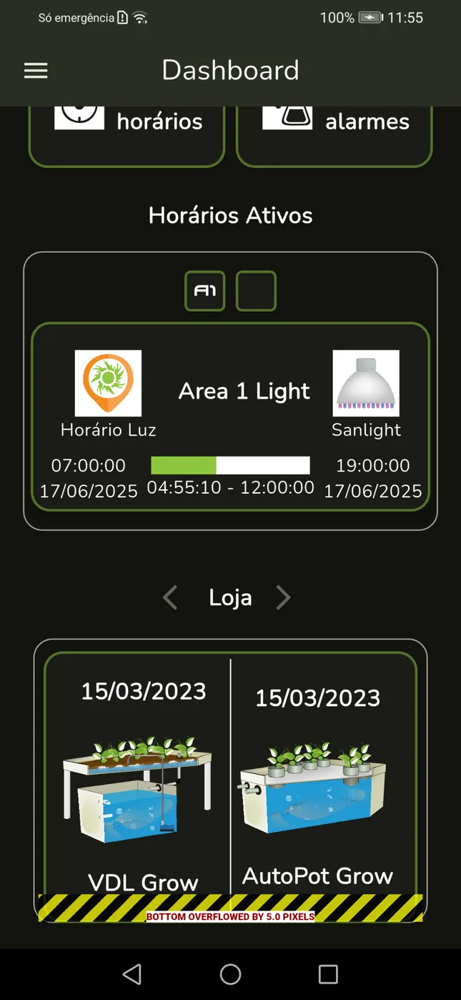
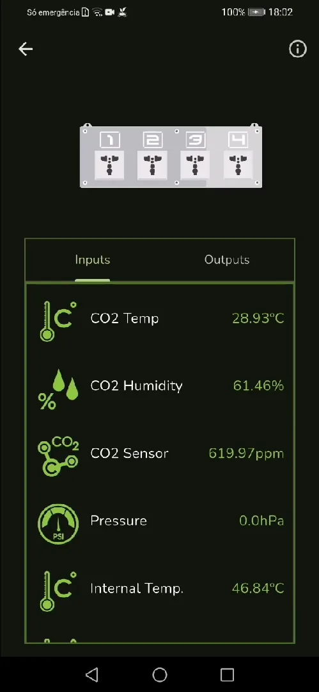
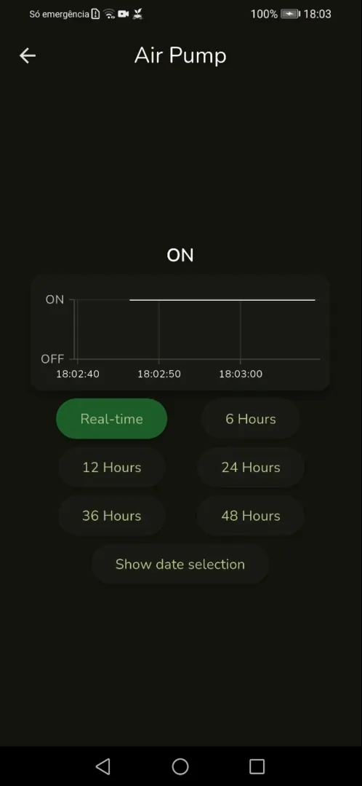
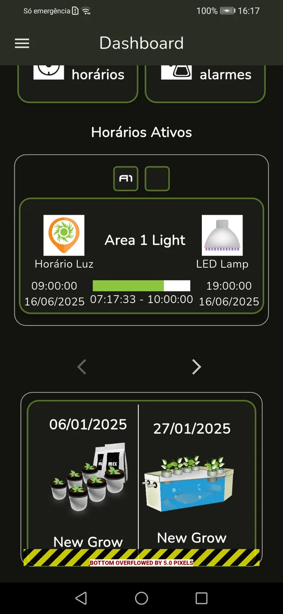
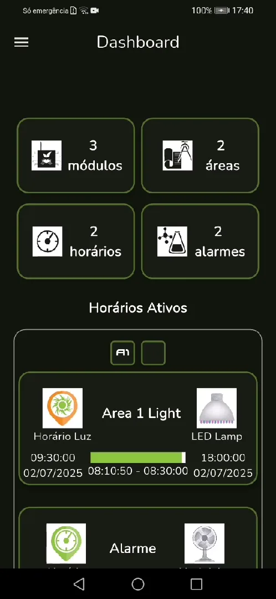

Finding the controller
Reworked the automatic network search, added IP validation and brought back search by serial number and hostname, which had stopped working, by mapping them to saved IP addresses.
Internship case study
A mobile app for smart growing systems. During my internship at an agricultural automation company, I took over an unstable Flutter prototype that monitors the company's hardware and turned it into a reliable app that passed Google Play review.
Company and product names are left out because the app is proprietary. The source code is private and talks directly to the company's hardware.

01 · Context
The company builds a modular system for automating urban and indoor growing. A central controller runs the whole setup and manages modules for power, lights and climate, soil sensors, and water (pH, EC and level). Until then, it could only be monitored from a desktop program on Windows.
A student had started a mobile app the year before, but it was incomplete, unstable and unpublished: outdated dependencies, frequent crashes, broken features and no clear feedback when something went wrong. My job was to take it over, fix it, finish it and get it ready for the Play Store.
02 · Screens



03 · Redesign


A summary at the top, consistent icons and colors in both themes, aligned cards and every section translated into the chosen language.
04 · What I did
Reworked the automatic network search, added IP validation and brought back search by serial number and hostname, which had stopped working, by mapping them to saved IP addresses.
Fixed Google sign-in by reconfiguring Firebase and the auth flow, and added unlock with the phone's own method (fingerprint, face, PIN), shown only when the device has one.
Sensor values went from 5–10 seconds to showing instantly. Fixed charts that showed wrong units and scales, and displayed boolean outputs as ON/OFF instead of 1/0.
RTSP and HTTP camera streams with fullscreen, a status light and clear error messages instead of blank screens.
Light and dark mode saved on the device, a splash screen that follows the theme, and complete Portuguese, English and Spanish translations, notifications included.
Fixed crashes (connecting to an IP with no controller, switching controllers after logout, no internet), updated every outdated dependency, cleared the previous developer's TODOs and reorganized the assets.
Developer account, store listing in several languages, featured graphic, a privacy policy page and an optimized build. The app passed Google's review; the public launch is up to the company.
Tested with company staff, first by sharing the APK and then through a closed beta on Google Play, fixing what they reported along the way.
Loading indicators, validation messages and gentle notices at the bottom of the screen instead of blocking pop-ups, so the user always knows what the app is doing.
05 · How it works
From the sensor to the phone
The app only reads data from the controller. Configuration stays in the desktop software, so a phone can never leave a grow in a broken state.
Like the controller itself, the app works on the local network without depending on a cloud server.
I kept the original architecture (Provider) and improved it from the inside instead of rewriting, so the company keeps a codebase it already knows.
06 · Challenges
Problem: the app didn't even build on current Flutter versions, and it came with inherited bugs and TODOs.
Solution: updated the dependencies, fixed the incompatibilities, studied the code before changing it and closed every TODO left by the previous developer.
Problem: searching for a controller by serial number or hostname relied on a method Flutter no longer supported.
Solution: the app now saves the serial number and hostname of each controller it finds together with its IP, and searches by that IP, with validation and clear warnings.
Problem: an IP with no controller, a dropped connection or no internet threw unhandled exceptions and closed the app.
Solution: proper exception handling around every connection, warnings the user must confirm, and a controlled return to the search screen.
Problem: zero values loaded forever, offline modules showed as online and charts showed °C or % on ON/OFF outputs.
Solution: data is validated before it's drawn, module status is checked before opening it, and boolean data gets its own chart.
07 · Results
08 · Next steps
09 · Takeaways
The code is private, but I'm happy to walk through how it works in an interview.